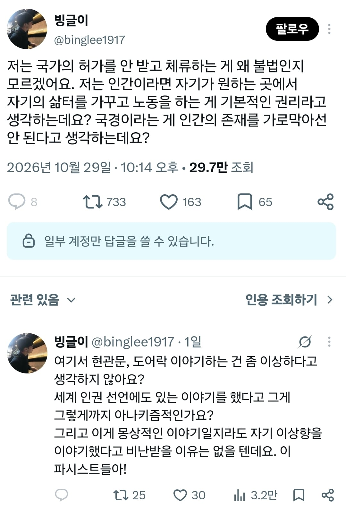
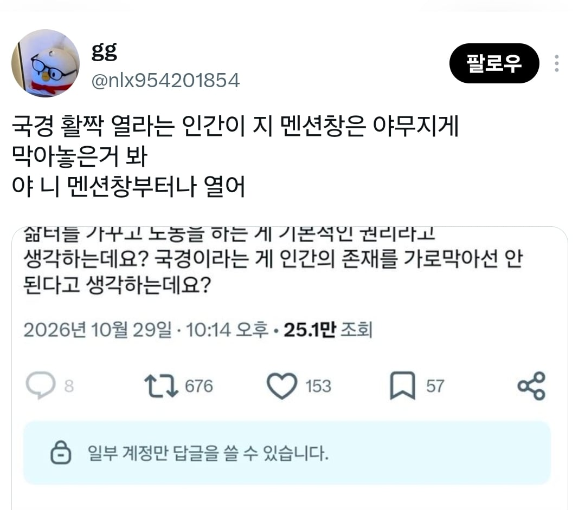
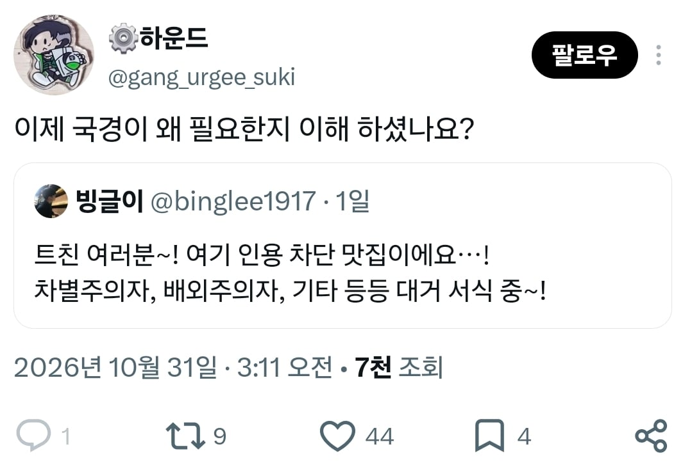

84 · 31 · 12 시간 전 · 원문



수집 당시 댓글 31개
메카다나카 · 13 시간 전
역설적상호삭용 · 13 시간 전
서울은핑거스냅이필요해 · 13 시간 전
캬 바로 척화비 박고 쇄국주의로 태세전환
초코마시쩡 · 13 시간 전
싼디스크 · 13 시간 전
국경을 차단하는 이유를 본인이 스스로 증명하고 있네
whoiam · 13 시간 전
의무교육 받다가 중도포기했나보네...
니소그 · 13 시간 전
"내 말을 들어!!!""근데 나한테 함부로 말걸지 말아줘"
오르다말아 · 13 시간 전
어쩌고중얼중얼 아무튼 내가 가고 싶은 선진국 갈아타기
Alphalak · 13 시간 전
ㅋㅋㅋㅋㅋ 증명 해버리시네
RogueKim · 13 시간 전
같은 한표
나가살으아라 · 13 시간 전
네 뭐 한국인이신 거 같은데 자유롭게 위로 가다보면 지뢰 밟고 뒤집니다 알아두세요
보지거머리 · 13 시간 전
모두가 순종적이고 같은 문화 사상 종교를 학습한다면 없어도 되겠지 극단적 자유주의 관점으로 남의 안전을 침해하는 궤변일 뿐임
행운의편지 · 12 시간 전
저사람은 사람들이 전부 정직하고 건실하다고 생각해서 저렇게 말하는거임
↳ 답글 · 국어시간에쳐졸았나 · 12 시간 전
아니라는걸 증명해줘야지
↳ 답글 · 구굴 · 8 시간 전
그래서 높은 확률로 공산주의자, 사회주의자를 겸함
원주민셔틀칭챙총 · 12 시간 전
참 순수해서 좋다
김굴굴 · 12 시간 전
현관문 열어놓고 살아 개씹쌔끼야 내가 들어가서 살게 이 씨발놈아
머랭이머랭 · 12 시간 전
군인이 왜 필요하죠? 전쟁을 안하면 되잖아요 라고 하는 수준이지ㅋㅋㅋ
앙타코띠 · 12 시간 전
데드데드미사일 · 12 시간 전
인간은 불완전하기 때문이지
↳ 답글 · 000660 · 8 시간 전
고로 인류보완계획이 필요하다
마리의붕어싸만코 · 12 시간 전
내로남불 ㅋㅋㅋㅋㅋ
AaBb씨씨 · 12 시간 전
멍청한 병신..
익사한넙치 · 12 시간 전
지 기분에 따라 세상이 변해야 된다고 믿는이기적이고 멍청한 흔해 빠진 인간
왁타버스 · 12 시간 전
저런 애는 북한에 보내고 똘똘한 북한 애는 수입 안 되냐
헛소리전문가 · 12 시간 전
AI가 예측 못하는 인간이 이런 부류 아닐까감탄할듯… 병신같은 말을 참 창의적으로 잘해
닌진 · 12 시간 전
깨어있는척 하고싶은 무지랭이
슬롭보면붐업누름 · 12 시간 전
평양까지 갔다가 돌아오면 100만원 줄게, 갔다 올래?
연골어류 · 11 시간 전
계정 열어!
Phstar · 11 시간 전
트위터에서 파시스트니 뭐니 하는 놈들이 제일 파시스트같음
ㄹㅇㅋㅋㄹㅇㅋㅋ · 9 시간 전
깨시민ㅋㅋ
댓글
수집 당시 댓글 31개
메카다나카 · 13 시간 전
역설적상호삭용 · 13 시간 전
서울은핑거스냅이필요해 · 13 시간 전
캬 바로 척화비 박고 쇄국주의로 태세전환
초코마시쩡 · 13 시간 전
싼디스크 · 13 시간 전
국경을 차단하는 이유를 본인이 스스로 증명하고 있네
whoiam · 13 시간 전
의무교육 받다가 중도포기했나보네...
니소그 · 13 시간 전
"내 말을 들어!!!"
"근데 나한테 함부로 말걸지 말아줘"
오르다말아 · 13 시간 전
어쩌고중얼중얼 아무튼 내가 가고 싶은 선진국 갈아타기
Alphalak · 13 시간 전
ㅋㅋㅋㅋㅋ 증명 해버리시네
RogueKim · 13 시간 전
같은 한표
나가살으아라 · 13 시간 전
네 뭐 한국인이신 거 같은데 자유롭게 위로 가다보면 지뢰 밟고 뒤집니다 알아두세요
보지거머리 · 13 시간 전
모두가 순종적이고 같은 문화 사상 종교를 학습한다면 없어도 되겠지 극단적 자유주의 관점으로 남의 안전을 침해하는 궤변일 뿐임
행운의편지 · 12 시간 전
저사람은 사람들이 전부 정직하고 건실하다고 생각해서 저렇게 말하는거임
· 국어시간에쳐졸았나 · 12 시간 전
아니라는걸 증명해줘야지
· 구굴 · 8 시간 전
그래서 높은 확률로 공산주의자, 사회주의자를 겸함
원주민셔틀칭챙총 · 12 시간 전
참 순수해서 좋다
김굴굴 · 12 시간 전
현관문 열어놓고 살아 개씹쌔끼야 내가 들어가서 살게 이 씨발놈아
머랭이머랭 · 12 시간 전
군인이 왜 필요하죠? 전쟁을 안하면 되잖아요 라고 하는 수준이지ㅋㅋㅋ
앙타코띠 · 12 시간 전
데드데드미사일 · 12 시간 전
인간은 불완전하기 때문이지
· 000660 · 8 시간 전
고로 인류보완계획이 필요하다
마리의붕어싸만코 · 12 시간 전
내로남불 ㅋㅋㅋㅋㅋ
AaBb씨씨 · 12 시간 전
멍청한 병신..
익사한넙치 · 12 시간 전
지 기분에 따라 세상이 변해야 된다고 믿는
이기적이고 멍청한 흔해 빠진 인간
왁타버스 · 12 시간 전
저런 애는 북한에 보내고 똘똘한 북한 애는 수입 안 되냐
헛소리전문가 · 12 시간 전
AI가 예측 못하는 인간이 이런 부류 아닐까
감탄할듯… 병신같은 말을 참 창의적으로 잘해
닌진 · 12 시간 전
깨어있는척 하고싶은 무지랭이
슬롭보면붐업누름 · 12 시간 전
평양까지 갔다가 돌아오면 100만원 줄게, 갔다 올래?
연골어류 · 11 시간 전
계정 열어!
Phstar · 11 시간 전
트위터에서 파시스트니 뭐니 하는 놈들이 제일 파시스트같음
ㄹㅇㅋㅋㄹㅇㅋㅋ · 9 시간 전
깨시민ㅋㅋ